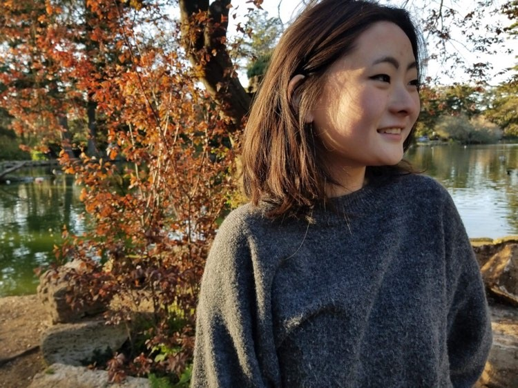

Lauren Adachi
Electrical Engineering Student at Brown University

I've worked on the BSE and Pufferfish ventilation team repositories:
-
Pufferfish Ventilation (Pez Globo):
I worked on the
interface PCB
where I created the electronics interface between front-end user devices and the control MCU.
-
Brown Space Engineering:
My team and I are initial stages of developing the PCBs for our newest satellite. The majority
of our current work is research and overall systems design--stay posted for hardware updates!
Links: